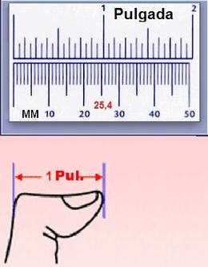

Pulgada es un término que procede de pulgar. El concepto se emplea para nombrar a un tipo de medida cuyo valor ha cambiado a lo largo de la historia. En su sentido original, la pulgada era equivalente al ancho de la primera falange del dedo pulgar de la mano.
Por cuestiones lógicas, la pulgada no tenía la misma longitud en todos los países. Generalmente se tomaba como unidad el pulgar del monarca de la región, algo que provocaba diferencias en las equivalencias.
Equivale a 25,40 mm. Su símbolo es in (tomado de su nombre en inglés: inch), se representa con dos comillas sobre el valor numérico. Un pie (sistema ingls) doce pulgadas; unos 30 cm aproximadamente en el SI
La pulgada o inch lineal vale 2,54 cm y para convertir los centímetros en pulgadas se multiplican por 0, 393 7. La pulgada cuadrada (square inch) vale 6, 451 6 cm2 y la pulgada cúbica 16, 387 cm3.
